攻撃タイプ
| スタンド名 | 対応部 | 攻 | 防 | 空 | 買/売 | 呪い | 装備 | 発動 | 隠し能力 | Base Only | 合成 | 版 | |
|---|---|---|---|---|---|---|---|---|---|---|---|---|---|
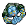 | オシリス神 | 3 | 3 | 1 | 1 | 1000/500 | 敵がコインを落とすようになるぞ 攻撃枠で殴り倒した敵は1/2で魂のコインを落とす（[発動]で倒した敵は必ず落とす。ボスは除く） | 敵を倒してコインにするぞ | +α | ||||
| ダークブルームーン | 3 | 2 | 2 | 3 | 3800/1900 | 周囲に水があるほど強いぞ | 部屋内の敵から体力を吸い取るぞ | [能力枠] 水の上を歩ける | 0.13 | ||||
| クリーム | 3 | 8 | 0 | 1 | 11000/5500 | 稀に相手を一撃で倒せるぞ 会心の一撃のときだけ999ダメージで一撃で倒す トニオさん・怒トニオさん・ウンガロ・レクイエムジョルノには一撃で倒す効果が効かない | 前方の敵を亜空間に飲み込むぞ | ○ | 0.13 | ||||
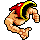 | マジシャンズレッド | 3 | 6 | 2 | 1 | 13200/6600 | 体力満タンでＣＦＨが撃てるぞ HPが満タンのとき、殴りが外れず、前方4マス以内（壁より手前）に敵がいれば炎を撃つ。人物・仲間・店主は数えない | 部屋内の敵にランダムでダメージＳ | [能力枠] 氷漬けにならない | 0.13 | |||
| サン | 3 | 5 | 0 | 1 | 14000/7000 | レーザーで敵を攻撃するぞ | 太陽光線で部屋内全員にダメージＢ | 0.15 | |||||
| ザ・ワールド | 3 | 9 | 4 | 1 | 15600/7800 | ジョースターの血統に大ダメージ ジョースターの血統（ジョセフ・ジョセフィーヌ・ジョナサン・承太郎・仗助・ジョルノなど）への3/2倍のダメージ | 5ターンの間、時間が止まるぞ | [能力枠] 敵の時止めの中でも動ける（時止めで追い込まれた場面で間に合う演出つき） | 0.13 | ||||
| ハーミットパープル | 3/4 | 1 | 2 | 4 | 700/350 | 波紋に弱い敵に大ダメージを与えるぞ | このフロアの地図がわかるぞ | [能力枠] 波紋を受けない [攻撃枠] 屍生人にされない | 0.13 | ||||
| スター・プラチナ | 3/4/6 | 8 | 4 | 1 | 17000/8500 | ３方向に攻撃できるぞ | 射撃攻撃を防げるようになるぞ | [能力枠] ロードローラーのダメージが半分になる [能力枠] 敵の時止めの中でも動ける | ○ | 0.13 | |||
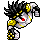 | スタプラザワールド | 3/4/6 | 10 | 10 | 0 | 20000/10000 | ３方向に攻撃できるぞ | 5ターンの間、時間が止まるぞ | [能力枠] ロードローラーのダメージが半分になる [能力枠] 敵の時止めの中でも動ける（時止めで追い込まれた場面で間に合う演出つき） | ○ | スター・プラチナ と ザ・ワールド の合成でのみ作成可能 | 0.13 | |
| シルバーチャリオッツ | 3/5 | 4 | 1 | 1 | 14000/7000 | 時々２回連続で攻撃できるぞ | ５ターンの間、残像を出現させるぞ | 0.13 | |||||
| ザ・ハンド | 4 | 7 | 1 | 3 | 700/350 | 壁や罠をガオンと消せるぞ 殴りは会心かミスのどちらかになる（外れる確率が上がるかわりに、当たれば必ず会心）。億泰の記憶で腹が減りやすい間は適用されない 壁や罠を消した回数が増えるほど壊れやすくなる（最初の10回は壊れず、以降は回数に応じて壊れる確率が上がっていく） | 遠くの敵やアイテムを引き寄せるぞ | 0.13 | |||||
| キラーダンシングクイーン | 4 | 9 | 9 | 0 | 1000/500 | 杜王町住人に大ダメージを与えるぞ | 100円玉を爆弾にするぞ | 0.15 | |||||
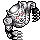 | キラー・タイガー・クイーン | 4 | 9 | 9 | 0 | 1000/500 | 杜王町住人に大ダメージを与えるぞ | シアーハートアタックを呼び出すぞ | [能力枠] 爆弾が見分けられる [能力枠] 投げた爆弾や空気弾が敵や壁に当たると爆発する | 0.16 | |||
| チリペッパー | 4 | 3 | 2 | 3 | 1250/625 | 連続空振りすると次に会心が出るぞ 連続で2回空振りすると、次の直接攻撃は必ず当たり会心の一撃になる | 部屋内の敵を一定時間盲目にするぞ | [どの枠でも] 水の上にいる間、毎ターン3〜5ダメージを受ける（防御は無視） | 0.13 | ||||
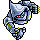 | ボーイIIマン | 4 | 2 | 2 | 3 | 3400/1700 | 殴った敵が時々封印状態になるぞ 会心の一撃のときは必ず敵を封印する | 合成された能力を消去できるぞ | 0.13 | ||||
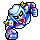 | クレイジー・D | 4 | 7 | 1 | 3 | 4600/2300 | 会心の一撃が多く出るぞ 仗助の記憶で暴れている間（プッツン状態）は、殴ると必ず会心の一撃になる | このDISCと引き換えにDISCを合成するぞ | [能力枠] （+α）金を盗む敵（玉美）に盗まれるとき、玉美を治す動きが入る | 0.13 | |||
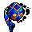 | ハイウェイ・スター | 4 | 1 | 1 | 1 | 5200/2600 | 時々ダメージを吸収しHPを回復するぞ 会心の一撃のときは必ずダメージを吸収してHPが回復する | 部屋内の敵から満腹度を吸い取るぞ | 0.13 | ||||
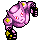 | キラー・クィーン | 4 | 5 | 3 | 1 | 11700/5850 | 杜王町住人に大ダメージを与えるぞ | 目の前にシアーハートアタックを呼び出すぞ | [能力枠] 爆弾が見分けられる [能力枠] 投げた爆弾や空気弾が敵や壁に当たると爆発する | 0.13 | |||
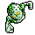 | エコーズACT3 | 4/5 | 2 | 1 | 5 | 650/325 | 時々相手を遅くさせるぞ 会心の一撃のときは必ず敵を鈍足にする | 目の前の敵を鈍足状態にするぞ | 0.13 | ||||
| ムーディーブルース | 5 | 1 | 1 | 4 | 600/300 | 新入りに大ダメージを与えるぞ | アイテムを一つ倉庫に送れるぞ | 0.13 | |||||
| パープル・ヘイズ | 5 | 7 | 1 | 4 | 1000/500 | 時々変な方向を攻撃してしまうぞ | ウイルスで部屋内全員にダメージＡ | 0.13 | |||||
| S・C・レクイエム | 5 | 1 | 3 | 1 | 1000/500 | 背面の敵に大ダメージを与えるぞ 敵と向かい合っている（敵の向きがプレイヤーと正反対）ときだけダメージが1.5倍（説明文の「背面」とは食い違う） | 部屋中の生物の精神を入れ替えるぞ | +α | |||||
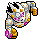 | G・E・レクイエム | 5 | 12 | 12 | 1 | 1000/500 | 全ての敵に大ダメージを与えるぞ | 終わりが無いのが終わりを終わりにする | 0.13 | ||||
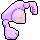 | ベイビィ・フェイス | 5 | 4 | 3 | 0 | 1250/625 | 女性に大ダメージを与えるぞ | 目の前の女性をベイビィフェイスに変えるぞ | 0.16 | ||||
| クラッシュ | 5 | 4 | 0 | 3 | 6100/3050 | 水場を通して攻撃できるぞ （+α）水場を攻撃すると、水場に隣接する敵をまとめて攻撃する | 目の前の敵を瞬間移動させるぞ | [能力枠] トーキング・ヘッドの罠にかからない | ○ | 0.13 | |||
| ホワイトアルバム | 5 | 0 | 8 | 2 | 6100/3050 | 時々敵を氷漬けにするぞ 会心の一撃のときは必ず敵を氷漬けにする | 部屋内の敵を凍らせるぞ | [能力枠] 氷漬けにならない [能力枠] 水の上を歩ける [能力枠] 最大HP・最大精神力を吸う攻撃や精神力を下げる攻撃を防ぐ | 0.13 | ||||
| リトル・フィート | 5 | 1 | 1 | 0 | 10500/5250 | 攻撃枠のDISCがサンのときは敵を小さくしない すでに小さい敵にも効き、HPがさらに半分になる | なし | [能力枠] 連続攻撃（弾幕）の敵から受けるダメージが小さくなる（1/10・上限200） | 共通追加 | ||||
| スティッキーフィンガーズ | 5 | 4 | 3 | 1 | 16000/8000 | ２マス先まで攻撃できるぞ | キーを押すまで敵をやりすごせるぞ | ○ | 0.13 | ||||
| キング・クリムゾン | 5 | 9 | 3 | 1 | 19000/9500 | 裏切り者に大ダメージを与えるぞ | ５ターンの時間が消し飛ぶぞ | 0.13 | |||||
| スカイ・ハイ | 6 | 3 | 0 | 3 | 1800/900 | 時々敵を盲目にするぞ 会心の一撃のときは必ず敵を盲目にする（倒れなかった盲目でない敵が対象） | 隣接した敵を盲目にするぞ | 0.14 | |||||
| ジャンピンJフラッシュ | 6 | 2 | 3 | 3 | 1800/900 | 時々敵をふっとばして混乱させるぞ | 真空で部屋内全員にダメージＢ | 0.13 | |||||
| キッス | 6 | 4 | 1 | 4 | 2300/1150 | 殴った敵が時々分裂するぞ ラバーズ・ウンガロ・レクイエムジョルノ・エンヤには分裂が起きない | キッスのシールを地面に貼り付けるぞ | 0.13 | |||||
| ストーン・フリー | 6 | 3 | 4 | 2 | 2700/1350 | 後ろの敵に連続して攻撃できるぞ | 体力が全回復するぞ | 0.13 | |||||
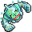 | C-MOON | 6 | 1 | 0 | 4 | 6000/3000 | 稀に殴った相手を瀕死にするぞ 殴った敵がダンジョンの主・トニオさんのときは瀕死にならない HPが1の敵に起きた場合はダメージを与えられない | 隣接した敵を全部吹っ飛ばすぞ | [攻撃枠] C-MOONの裏返り攻撃を受けない | 共通追加 | |||
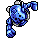 | ダイバーダウン | 6 | 2 | 3 | 2 | 6300/3150 | 近くの敵に壁を通して攻撃できるぞ 壁を通した攻撃は1/12で外れる | 周囲にダイバーダウンを潜ませておけるぞ | ○ | 0.13 | |||
| ホワイトスネイク | 6 | 3 | 1 | 4 | 9400/4700 | 囚人に大ダメージを与えるぞ 囚人（挙げられた敵）への3/2倍のダメージ。囚人でないプッチ神父やC-MOONは等倍 | 目の前の敵を倒しDISCにするぞ | 0.13 | |||||
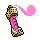 | クリーム・スターター | 7 | 3 | 1 | 2 | 2500/1250 | 敵がローストビーフサンドイッチを落とすぞ | 自分と仲間を回復するぞ | 0.15 | ||||
| チケット・トゥ・ライド | 7 | 1 | 0 | 1 | 8000/4000 | 攻撃が必ず命中するぞ 攻撃が必ず当たるのは通常の殴りのみ（投げには効かない）。ザ・ハンドと合成しても命中率は変わらない | 7ターンの間攻撃が致命的になるぞ | +α | |||||
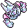 | D4C | 7 | 4 | 5 | 0 | 11800/5900 | SBR参加者に大ダメージを与えるぞ | 目の前の敵を別の次元に送るぞ | 0.15 | ||||
| タスクact4 | 7 | 13 | 1 | 0 | 99999/49999 | 殴った敵が3ターンで死ぬぞ 攻撃枠のDISCがサンのときは、死までのカウントが付かない | 前方の敵を皆殺しにするぞ | 0.15 | |||||
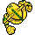 | ソフト&ウェット | 8 | 5 | 3 | 0 | 99999/49999 | 岩人間に大ダメージを与えるぞ | 視覚や摩擦を奪うぞ | 0.16 | ||||
| D4C | 6 | 3 | 1 | 10000/5000 | SBR参加者に大ダメージを与えるぞ | 同じ階の隣の世界に移動するぞ | +α |